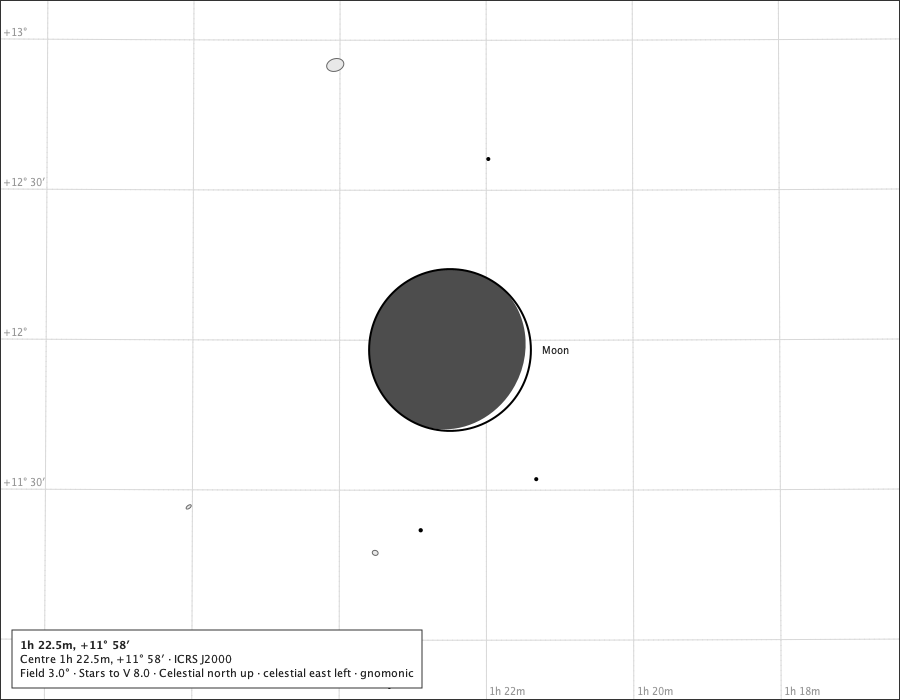

The Sun and the Moon
A young Moon at true size

- Region
- Pisces
- Field
- 3°
- Ink
- The phased disc and its name are Sun and Moon module ink; everything else is the core chart.
- Source
- docs/studies/gallery/sun-and-moon-crescent.png
- Produced
- Composed by the production chart component with the real Solar System module and body painter (GalleryPageMain); regenerated and compared by make evidence-contracts. Sprint 37 tree.